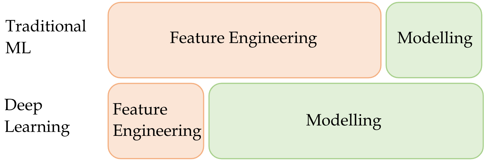
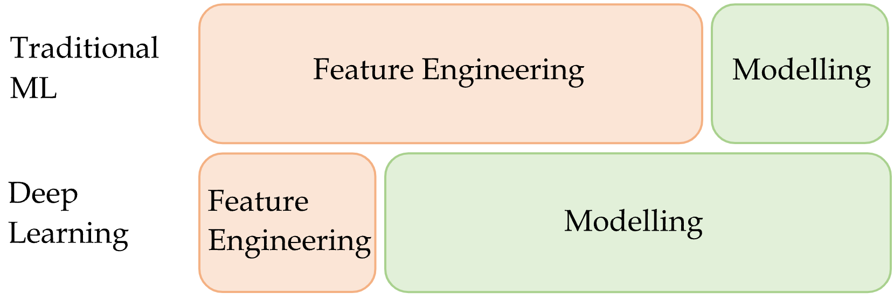
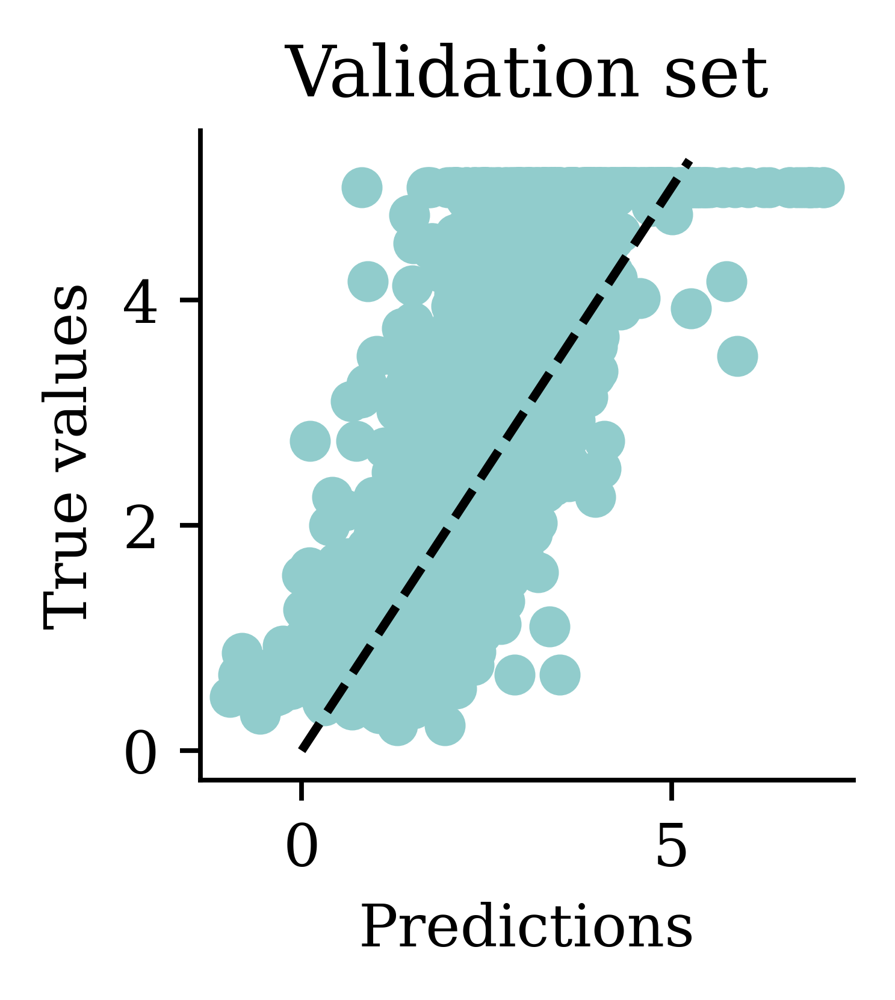
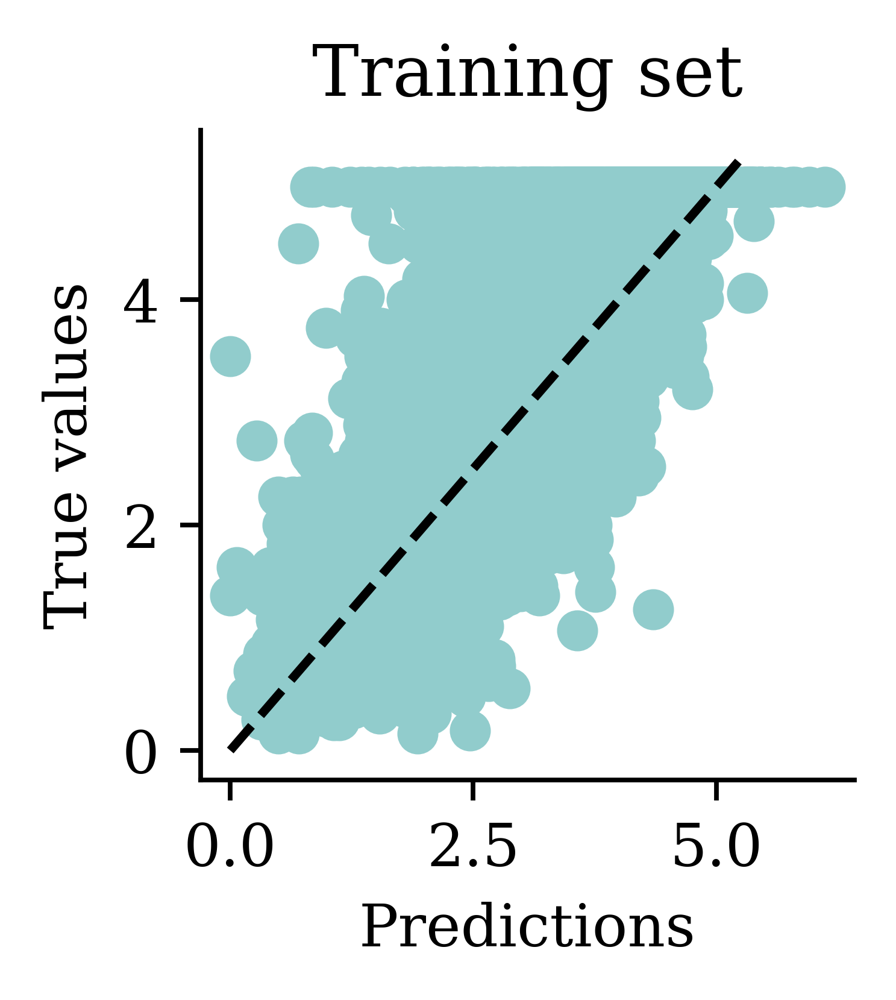

Deep Learning with Keras
ACTL3143 & ACTL5111 Deep Learning for Actuaries
Deep Learning

Meditation + books = Deep learning.
A neuron ‘firing’

An artificial neuron

A neuron in a neural network with a ReLU activation.
One neuron
\begin{aligned} z~=~&x_1 \times w_1 + \\ &x_2 \times w_2 + \\ &x_3 \times w_3 . \end{aligned}
a = \begin{cases} z & \text{if } z > 0 \\ 0 & \text{if } z \leq 0 \end{cases}
Here, x_1, x_2, x_3 is just some fixed data.
The weights w_1, w_2, w_3 should be ‘learned’.
One neuron with bias

A basic neural network

A basic fully-connected/dense network.
Feature engineering

 

The deep learning hammer
Deep learning is not always the answer!

The map of data science.
Quiz
In this ANN, how many of the following are there:
- features,
- targets,
- weights,
- biases, and
- parameters?
What is the depth?

An entire ML project

ML life cycle
Set aside a fraction for a test set

Note: Compare X_/y_ names, capitals & lowercase.

Basic ML workflow

Splitting the data.
- For each model, fit it to the training set.
- Compute the error for each model on the validation set.
- Select the model with the lowest validation error.
- Compute the error of the final model on the test set.
Why not use test set for both?
Thought experiment: have m classifiers: f_1(\mathbf{x}), \dots, f_m(\mathbf{x}).
They are just as good as each other in the long run \mathbb{P}(\, f_i(\mathbf{X}) = Y \,)\ =\ 90\% , \quad \text{for } i=1,\dots,m .
Evaluate each model on the test set, some will be better than others.

Take the best, you’d think it has \approx 98\% accuracy!
Location
Python’s matplotlib package \approx R’s basic plots.

Plot the predictions


What are Keras and TensorFlow?
Keras is common way of specifying, training, and using neural networks. It gives a simple interface to various backend libraries, including Tensorflow.

Keras as a independent interface, and Keras as part of Tensorflow.
Loss curve

Loss curve

Predictions

Try different activation functions

Plot the predictions


Re-scaling the inputs

Loss curve

Loss curve

Predictions

Choosing when to stop training

Illustrative loss curves over time.
Predictions


The data


{kind=link}
{kind=link}
Glossary
- activations, activation function
- artificial neural network
- biases (in neurons)
- callbacks
- classification problem
- cost/loss function
- deep network, network depth
- dense or fully-connected layer
- early stopping
- epoch
- feed-forward neural network
- Keras, Tensorflow, PyTorch
- labelled/unlabelled data
- machine learning
- matplotlib, seaborn
- neural network architecture
- perceptron
- ReLU
- representation learning
- sigmoid activation function
- targets
- training/test split
- weights (in a neuron)
- validation set